Help us plan the ICOLD 2027 program and tours. This survey takes about 1 minute. ICOLD 2027 프로그램과 투어 기획을 위한 설문입니다. 약 1분 정도 소요됩니다.
Don't fill this out if you're human:
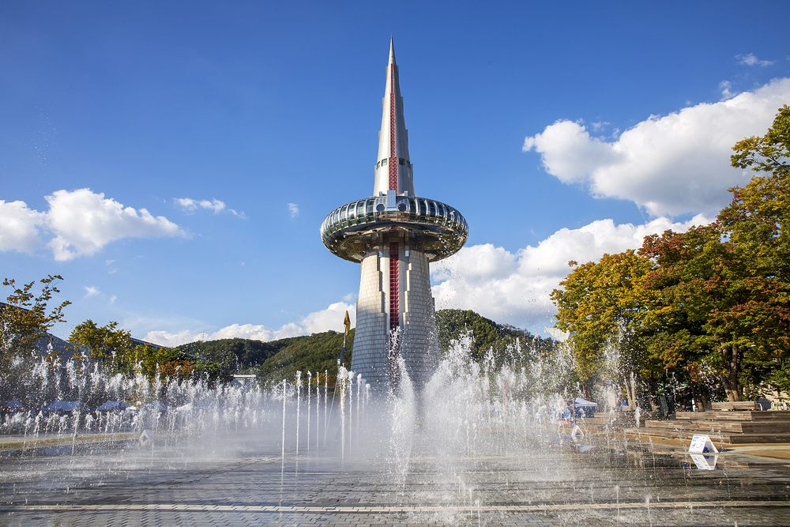
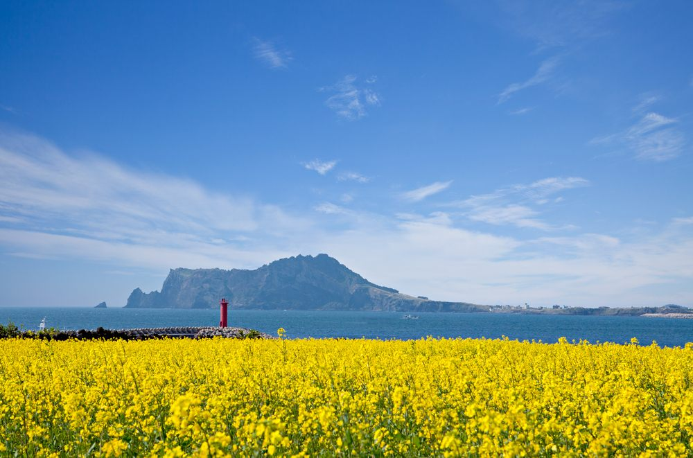
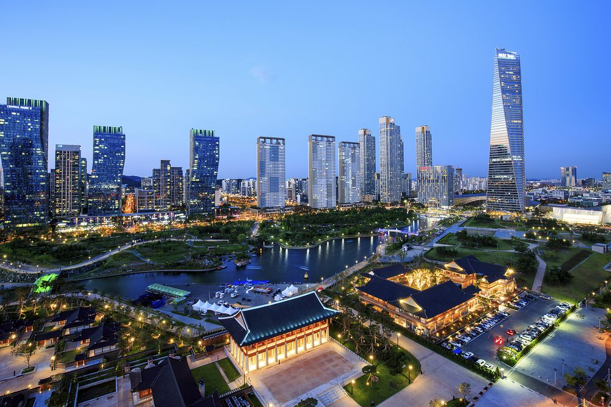
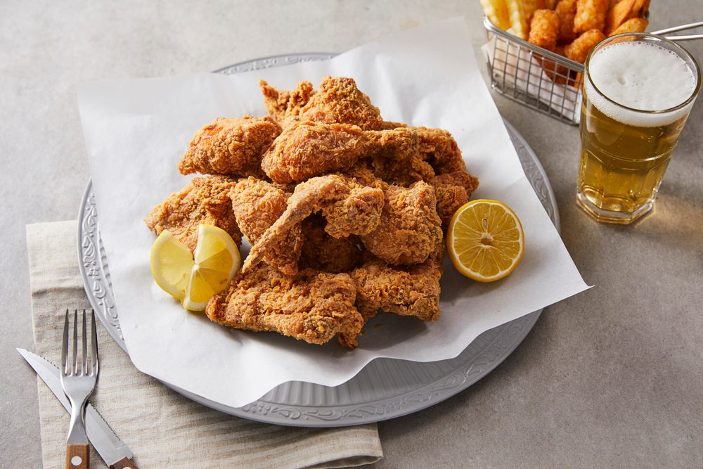
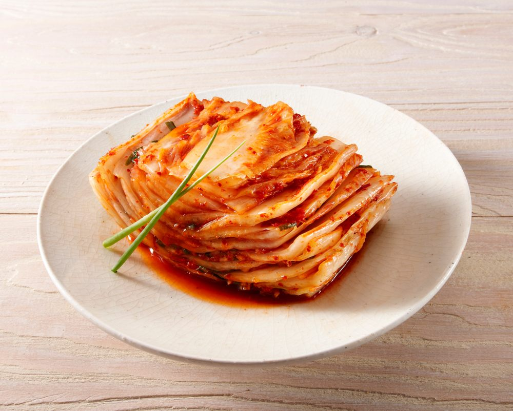
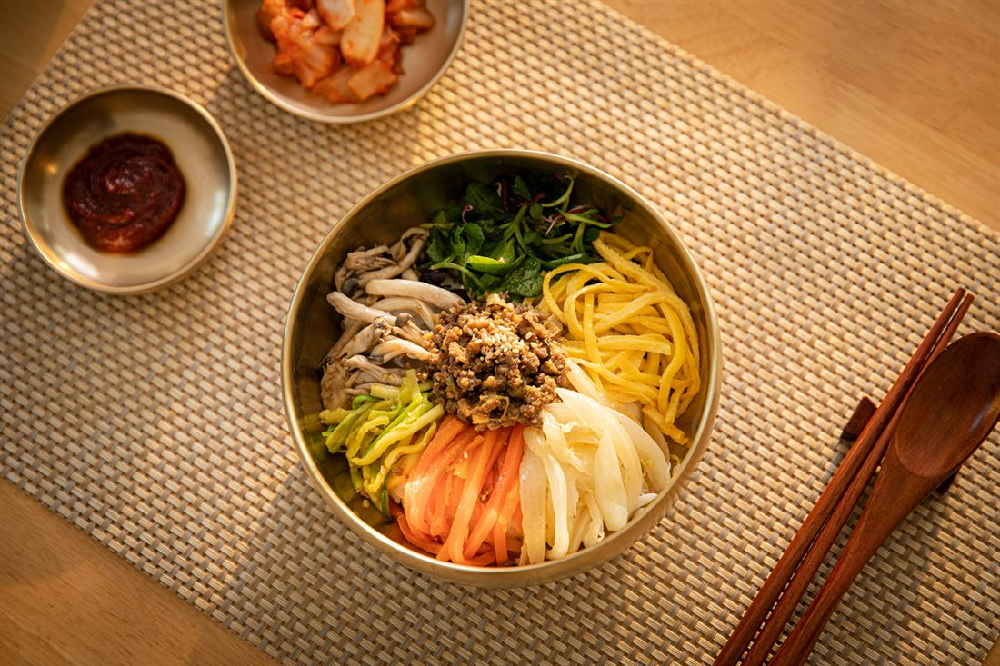
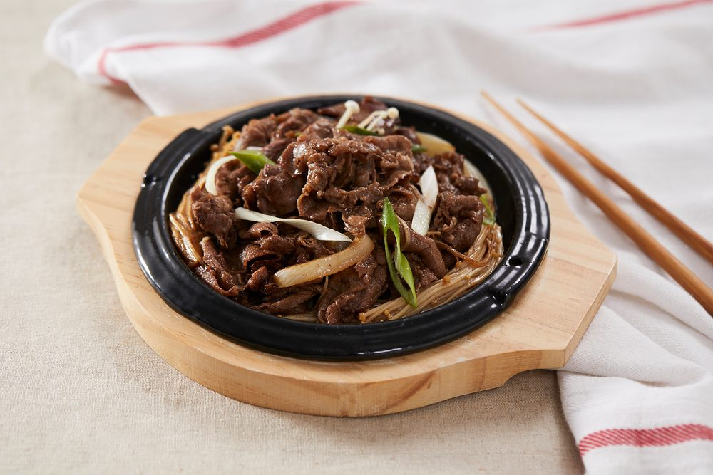
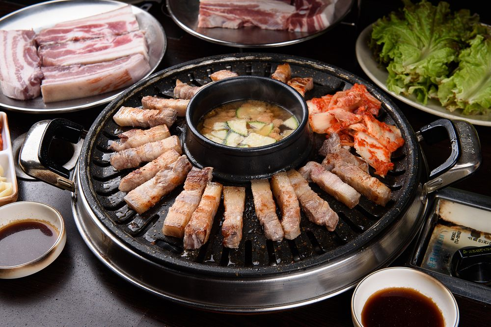
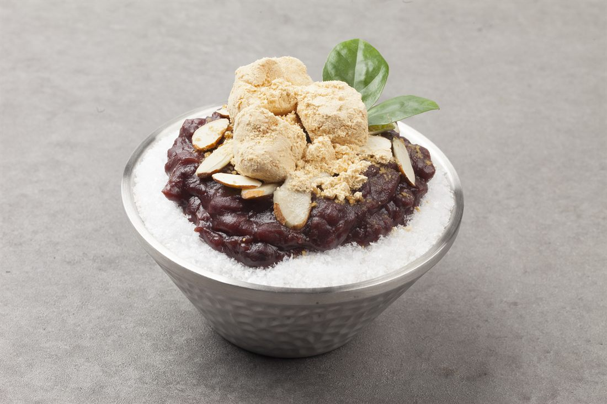
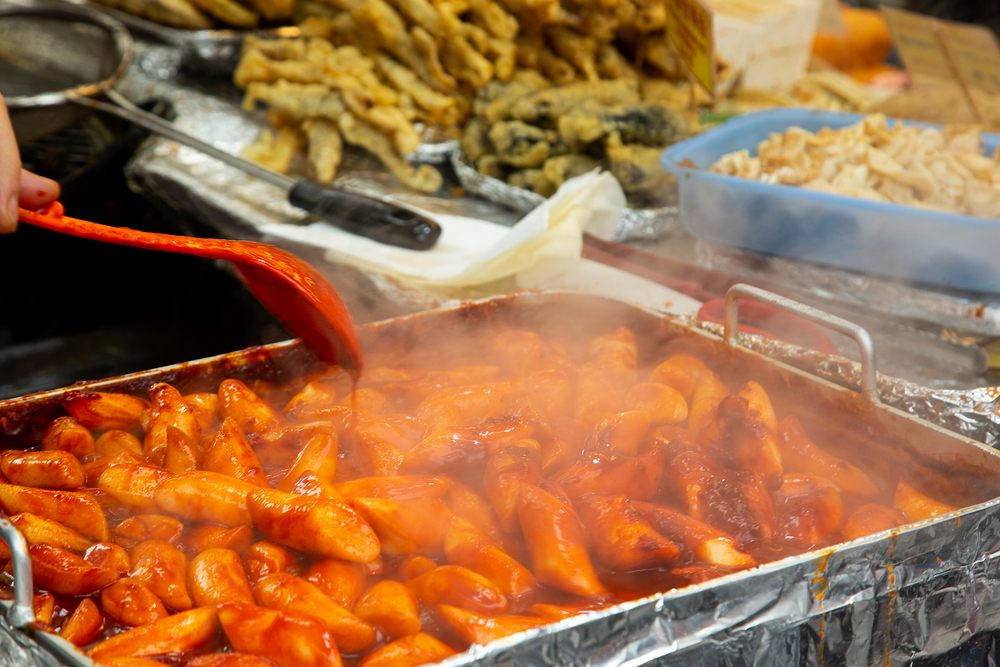
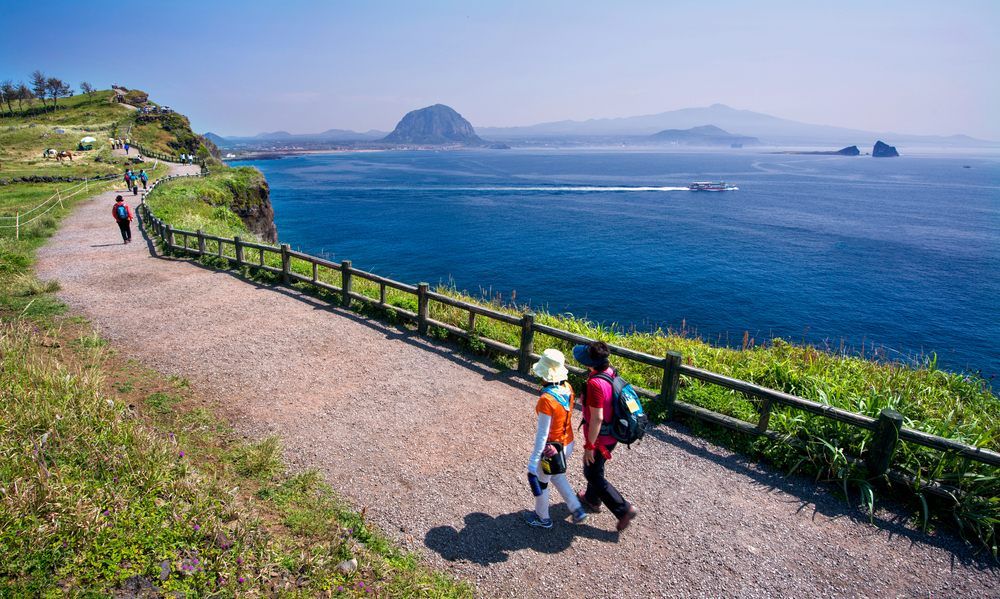
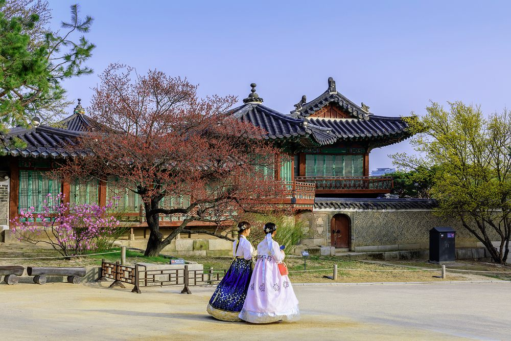
Your responses are anonymous and used only for ICOLD 2027 planning purposes. 응답은 익명으로 수집되며 ICOLD 2027 행사 기획 목적으로만 사용됩니다.